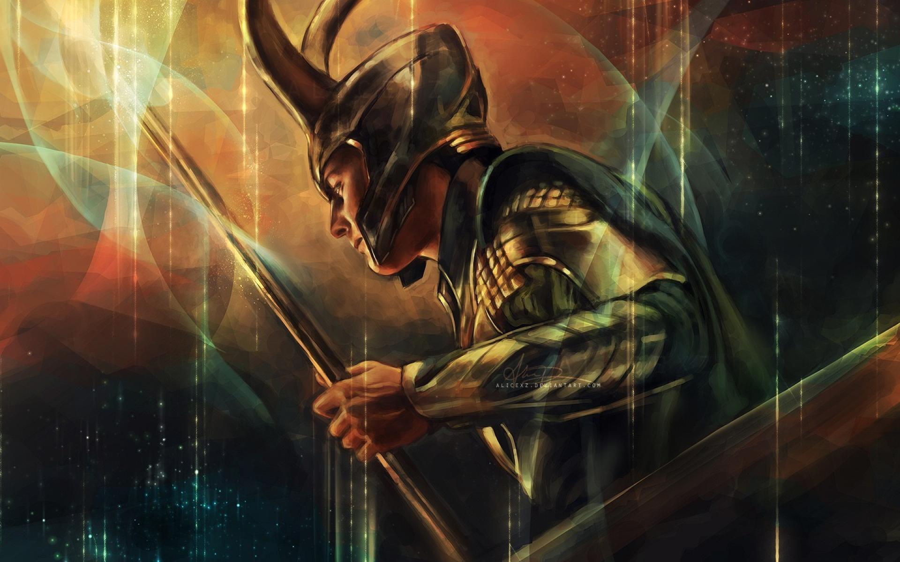

Loki the god of mischief!
I used to be good
I am the one to escape
Loki really a god?
Not much because this is fandom! So here is what I think. Loki was an outcast to his family of Frost Giants! They sought to abandon him
in the process of doing so Odin and the aesir invaded. Odin being the "Quote: God of War" sought to slay all the
found that they were more formitable than first thought. While inside the frost palace he found the young Loki! Taking pitty while falling back he took the young
giant under his wing and raised him as his own! Years later Loki grew into his own powers not of the liniage of ancestors but of magics. He played tricks on the
Surprisingly Loki holds a giant roll with in the nore lore. He is the cause for the end and rebirth of the cycle. Through his killing of Bauldr which sparks ragnarock.
With the death of Baldur loki finds himself in trouble with the gods. Where Odin tasks him going to his daughter Hel to retreave the soul of Baldur!
While doing so Fenrir and Jormungundr and the Frost giants invade Asguard where Odin is slain by Fenrir and Jormungundr is slain by Thor while also being struck down himself.
A major problem between Loki and the gods of Asguard Was the fact that Loki has no bloodline. His power cannot be stripped away like the other gods.
Loki found that facing strong adversity he would change how Asguard fate would end up!
A great punishment Odin performed on loki was having him bound to a tree with a snake dripping his venom into his eyes. Caused by the fact he killed Bauldr the punishment was severe. was punished until ragnarock.
He had some escape from the punishment. His wife Sigyn would catch the venom in a bowl to try and releave the punishment. But each time the bowl filled she would have to go and empty it
which allowed for the venom to fall into Loki's eyes once again.